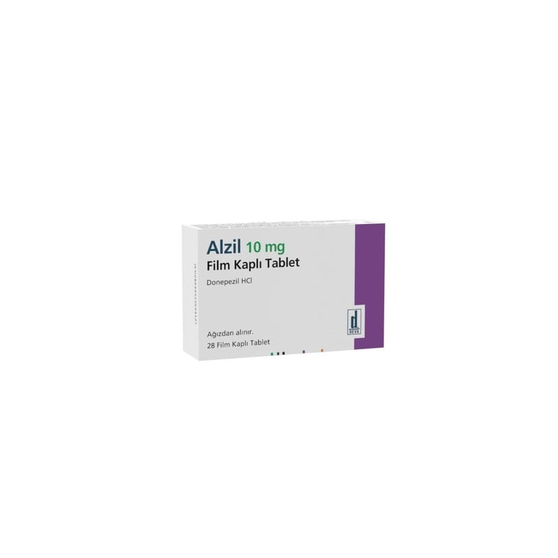

Alzil 10 mg Film Kaplı Tablet, 28 Adet

Ne için kullanılır
KT · Bölüm 1ALZİL (Donepezil hidroklorür) 10 mg film kaplı tabletler, beyaz renkte, yuvarlaktır. Her bir tablet 10 mg donepezil hidroklorür içerir ve 14 tablet içeren 1 blister veya 14 tablet içeren 2 blisterlik ambalajlarda sunulmuştur. ALZİL, hafif ve orta şiddetli Alzheimer tipi bunama belirtilerinin tedavisinde kullanılır ve etkin maddesi donepezil hidroklorür, asetilkolinesteraz inhibitörleri olarak anılan bir ilaç sınıfına aittir. ALZİL, yalnızca erişkin hastalarda kullanılır.